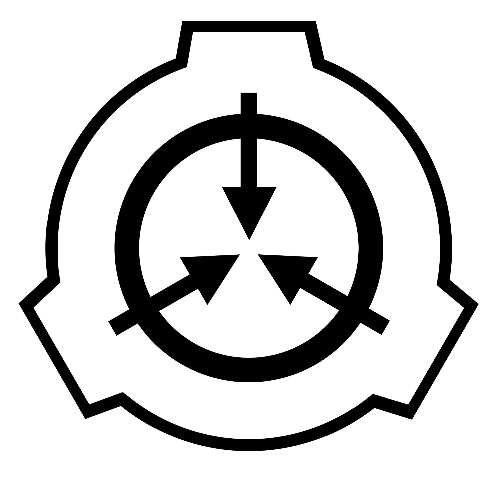
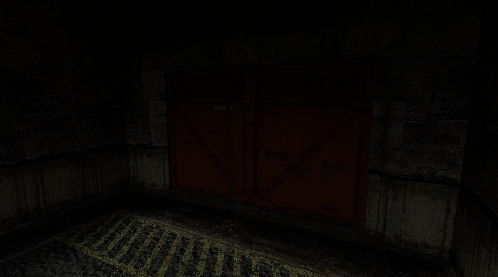

SCP Foundation — Архивный отчёт
Отдел полевых операций
ВНИМАНИЕ: ДОКУМЕНТ ИМЕЕТ УРОВЕНЬ ДОПУСКА 5
ДОСТУП ПРЕДОСТАВЛЕН: МОГ Дзета-9 («Кротокрысы»)
Вводная документация
Объект: SCP-3790-RU
Класс:«Евклид» (ВРЕМЕННО)
Описание
В квадрате ██-██ Сибирского федерального округа спутниковой разведкой обнаружен заброшенный научно-исследовательский комплекс постройки Академии Наук СССР (ориентировочно 198█ год). Внешне - корпуса НИИ Прикладной Радиофизики. Внутреннее сканирование выявило под поверхностью многоуровневое заглубленное сооружение бункерного типа. Специалистами отдела топологии предполагается нестабильность внутренних помещений.

Характер аномалии
Под землёй комплекса находится разветвлённая сеть коридоров и камер, многие из которых частично разрушены и затоплены. Инфраструктура комплекса поддерживается неизвестным автономным источником энергии, предположительно аномальной природы. Аномалия не существует ни в одном официальном реестре, базе данных или историческом документе Фонда SCP (или ГРУ). Любые попытки найти о ней информацию извне заканчиваются неудачей. Единственный источник сведений — это сам объект, его внутренние документы и содержимое камер.
Задача МОГ Дзета-9
В связи с полным отсутствием документации и непринадлежностью объекта к ведомству Фонда, перед оперативной группой ставятся следующие приоритетные задачи:
- Реконструкция. Установить происхождение комплекса и личности ученых, проводивших здесь исследования.
- Каталогизация. Идентифицировать содержимое комплекса, присвоить объектам первичные номера SCP-3790-X-RU.
- Составление первичной документации. Необходимо узнать больше об аномальных свойствах объекта.
[AUTO-LOG] ACCESS TRACE: ZETA-9 / SIBERIA-11B / FILE ACTIVE